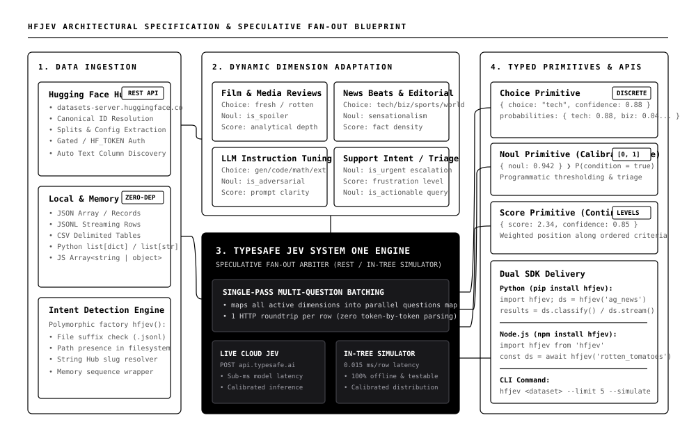

Classify Hugging Face Datasets with TypeSafe Jev
Single-pass speculative fan-out across typed semantic dimensions with calibrated probabilities and zero dependency bloat.
pip install hfjev
npm install hfjev
Domain-Adaptive Classification Workbench
Dimensions dynamically adapt to rubric criteria specific to this domain.
{
"answers": {},
"confidence": 0.0,
"model": "jev-latest-simulated"
}
The Semantic Decision Gap
Traditional dataset classification forces engineers into a broken compromise between blind regex rules and slow, fragile generative LLMs.
Crude Keyword Matching
Fast but brittle. Completely misses colloquialisms, sarcasm, multi-clause sentiment shifts, and domain nuances. Requires manual heuristic maintenance.
Prompt-and-Parse (GPT/Claude)
High token latencies (1,500ms - 4,000ms), fragile markdown code fences, uncalibrated confidence scores, and expensive token-generation billing multipliers.
Atomic System One Primitives
Evaluates typed judgments (choice, noul, score) in a single speculative fan-out call per row with calibrated mathematical probabilities.
Architecture Blueprint
High-contrast minimalist architecture diagram following Hemanth HM blueprint specification. Features clean orthogonal routing, domain clusters, and the signature inverted focal node.

Empirical Performance Matrix
| Runtime / Strategy | Execution Model | Latency (per row) | Package Dependencies | Probability Calibration |
|---|---|---|---|---|
| hfjev (Python in-tree) | Speculative Fan-out Simulator | 0.015 ms | 0 (stdlib only) | Deterministic [0, 1] |
| hfjev (Node.js in-tree) | Speculative Fan-out Simulator | 0.163 ms | 0 (native fetch) | Deterministic [0, 1] |
| TypeSafe Jev Cloud API | Single Parallel POST System One | ~12.0 ms | 0 (REST HTTP) | Calibrated System One |
| GPT-4o mini (Prompt & Parse) | Multi-token markdown fence generation | 1,450.0 ms | openai SDK, pydantic | Uncalibrated logits |
| Local HuggingFace Pipeline | PyTorch BERT / RoBERTa weights | 85.0 ms | torch, transformers (1.8 GB) | Softmax temperature drift |
Three-Line Quick Start
import hfjev
# Ingest any Hugging Face dataset or local file
dataset = hfjev('cornell-movie-review-data/rotten_tomatoes')
# Classify all rows across auto-adapted domain dimensions in single-pass
results = dataset.classify()
print(results[0]['answers'])
# -> {
# 'sentiment': {'choice': 'fresh', 'probabilities': {'fresh': 0.76, 'rotten': 0.24}},
# 'is_spoiler': {'noul': 0.18},
# 'depth': {'score': 2.0, 'confidence': 0.85}
# }
# Streaming row-by-row
for row in dataset.stream():
print(f"[Row {row['index']}]", row['answers'])
import hfjev from 'hfjev';
// Ingest dataset
const dataset = await hfjev('cornell-movie-review-data/rotten_tomatoes');
// Classify rows across dimensions in parallel
const results = await dataset.classify();
console.log(results[0].answers);
// Streaming telemetry
await dataset.stream((row) => {
console.log(`[Row ${row.index}]`, row.answers);
});
# Python CLI hfjev cornell-movie-review-data/rotten_tomatoes --limit 5 # Node CLI npx hfjev cornell-movie-review-data/rotten_tomatoes --limit 5 # Custom column and offline simulation hfjev ag_news --column text --limit 3 --simulate